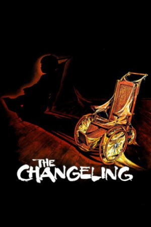
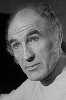

Country:Canada, 103 minutes
Spoken languages:English
Genres:Horror
Director(s):Peter Medak
Writer(s):William Gray, Diana Maddox
Video Codec:Unknown
Number: 2603


Certification:
Storyline:
After a tragic event happens, composer John Russell moves to Seattle to try to overcome it and build a new and peaceful life in a lonely big house that has been uninhabited for many years. But, soon after, the obscure history of such an old mansion and his own past begin to haunt him.
Cast: 

Medium: Original DVD,
Loaned: No
Aspect ratio: Unknown